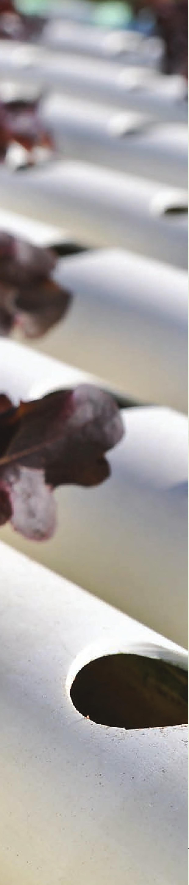

2 EQUIPMENT THE EQUIPMENT YOU’LL NEED FOR a hydroponic growing system depends, of course, on what kind of system you want to create. Except for the most basic systems, hydroponics usually includes a pump to recirculate the mixture of water and fertilizer. The recirculating water is important because it is through movement, and in some cases an airstone with tubing, that oxygen from the ambient air is supplied to the liquid and then to the plants. These pumps, along with the tubing and joining connectors, are the heart of the system and probably the most important equipment you will buy. IRRIGATION Irrigation is just a fancy word for watering, but when you are talking about a hydroponic growing system, defining it can get tricky. Whether you think of irrigation as providing nourishment or providing an infrastructure, the equipment you need to create the irrigation function really boils down to a couple basic items: a pump (with or without a filter) to propel and circulate the water through the system, and a series of tubes to convey the liquid. Water Pumps The major factors to consider when selecting a water pump are delivery height, target flow rate, and output tube size. Most systems simply need a pump powerful enough to deliver water to a specific height. For example, a grower selecting a pump for a flood and drain system can primarily focus on whether that pump has a maximum delivery height greater than the distance from pump outlet to flood tray. Some systems perform best when water is delivered at a target flow rate. A couple systems that depend on target flow rates are NFT and aeroponics. For these systems it is important to consider how delivery height will impact flow 19
